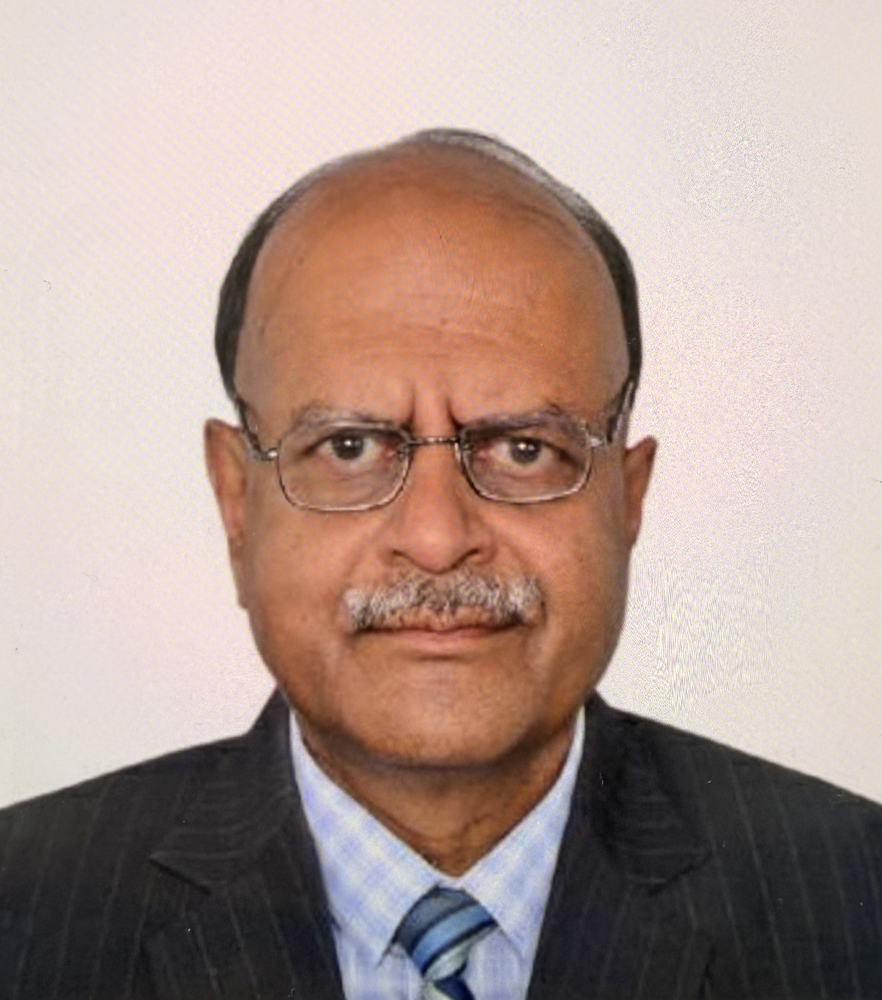
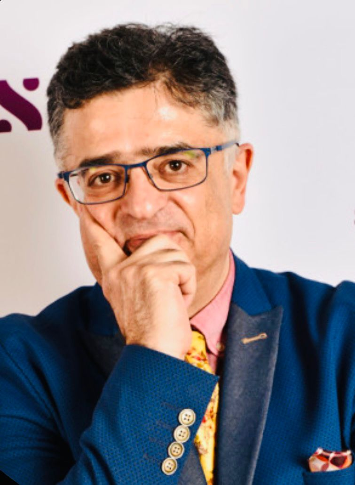
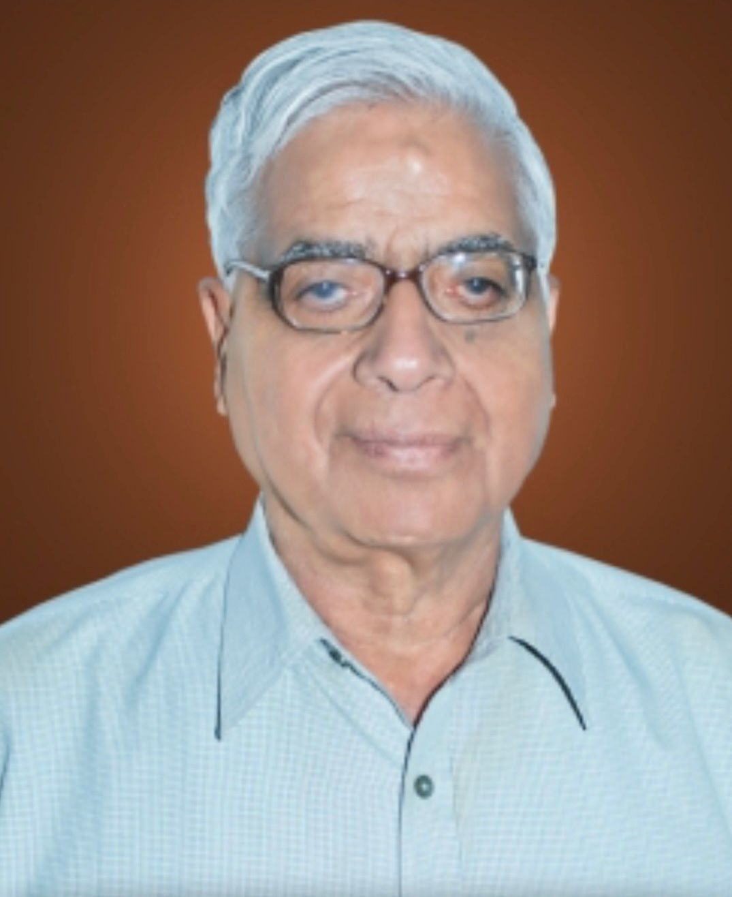

Global Fellow Emeritus
A lifetime recognition for eminent thought leaders whose work has substantially shaped their field, influenced policy, or advanced global research collaboration.
GIRA recognizes scholars, practitioners, and thought leaders whose work advances rigorous research, institutional mentorship, and global collaboration. Fellowship recognition is honorary and based on review of academic, professional, and research contributions.
A lifetime recognition for eminent thought leaders whose work has substantially shaped their field, influenced policy, or advanced global research collaboration.
Awarded to distinguished experts with significant experience, sustained research contributions, and a record of publications, institutional leadership, or policy engagement.
Recognizes high-potential researchers, early- to mid-career academics, and professionals who demonstrate strong promise in impactful inquiry and collaborative research.
GIRA recognizes eminent academic, institutional, and policy leaders whose work has shaped higher education, governance, management research, and global academic collaboration.
Prof. Elisante Gabriel is an internationally respected academic, strategic management expert, and public sector leader from Tanzania. He currently serves as the Chief Court Administrator of the Judiciary of Tanzania and has previously held several senior government positions, including Permanent Secretary in multiple ministries. With extensive experience across academia, governance, international consulting, and strategic leadership, he has contributed significantly to institutional development and public service transformation. Prof. Gabriel has also served as Lecturer and Visiting Professor at international universities in Africa, Europe, and India. His work reflects a strong commitment to interdisciplinary research, strategic management, leadership development, and evidence-based policy advancement.

Dr. Sanjiv Mittal is a distinguished academic leader and higher education administrator with extensive experience in university governance, academic leadership, and institutional development. He has served as Vice Chancellor of Sambalpur University and has held several senior positions at Guru Gobind Singh Indraprastha University (GGSIPU), including Professor, Director Academic Affairs, and Dean. With nearly two decades of academic and administrative experience, Dr. Mittal has contributed significantly to strengthening higher education systems, academic excellence, and institutional governance in India. His expertise spans academic administration, leadership development, curriculum advancement, and university management, making him a respected figure in the field of higher education.

Prof. Djamchid Assadi is an internationally recognised scholar, researcher, and academic based in France, associated with Burgundy School of Business and Université Paris Dauphine - PSL. With over two decades of experience in teaching, research, and international academic engagement, he has made significant contributions to the fields of marketing strategy, communication, and management education. Prof. Assadi has actively participated in global academic conferences and has been associated with leading European institutions as Professor and Researcher. His academic work reflects a strong commitment to international scholarship, interdisciplinary learning, and the advancement of global research collaborations across institutions and cultures.

Dr. K. L. Johar is a distinguished academician, educationist, and institution builder with extensive experience in higher education leadership and university administration in India. He is best known as the Founding Vice-Chancellor of Guru Jambheshwar University of Science and Technology and has also served as Pro-Vice Chancellor of Kurukshetra University. Dr. Johar has made significant contributions to academic governance, institutional development, and the promotion of science and technology education. Widely respected for his visionary leadership, he has played an important role in strengthening higher education systems and fostering academic excellence through his long-standing association with universities and educational planning bodies across India.
GIRA fellowships are designed to support an ecosystem of mentorship, collaboration, and scholarly recognition. They should not be presented as admissions credentials, paid certifications, or individual student services.
Fellows may contribute to research design, publication strategy, faculty development, and institutional capacity-building.
Fellows help strengthen multidisciplinary inquiry across academic, policy, development, and management education themes.
The network supports roundtables, research summits, policy dialogue, and sustained academic exchange.
Academics and research professionals with a record of inquiry, publication, or institutional contribution.
Industry and development leaders who bring applied insight to research, policy, and management education.
Public-interest contributors supporting evidence-based dialogue and policy-oriented research.
Senior academic and administrative leaders who help partner institutions strengthen research capacity.
Institutions, scholars, and senior contributors can initiate a conversation about research mentorship, advisory engagement, or global academic collaboration.